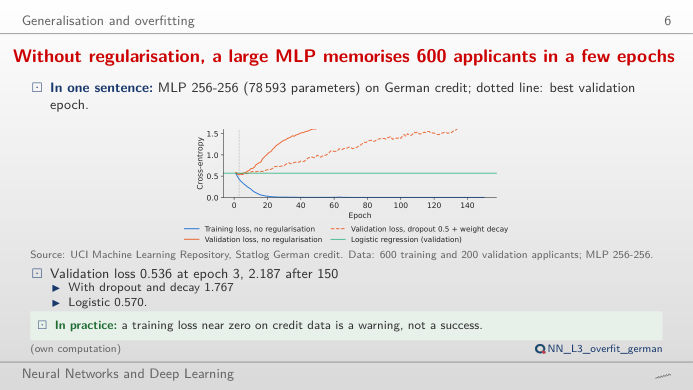
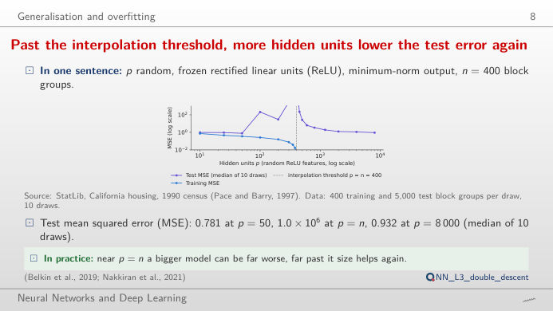
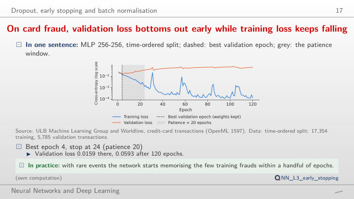
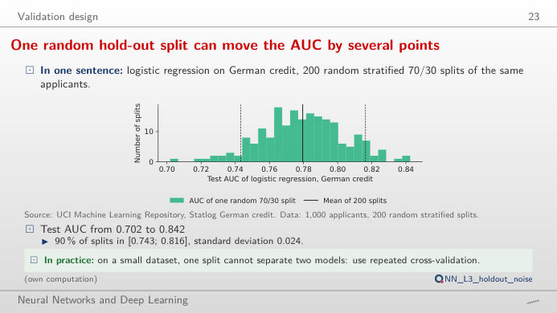
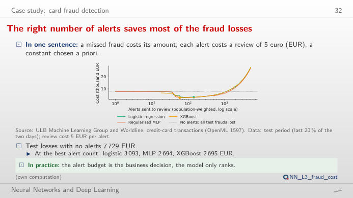

The slide of the lecture is on the left, the same figure on the right, recomputed in your browser from the course data when you move a control. The ▶ button moves the main parameter step by step. Under each figure: a readout, a question for the room and the Quantlet with the code of the chart. The curves are the real training runs of the lecture, saved epoch by epoch; the controls choose which run you see and where you stop it.
Overfitting and generalisation · Early stopping · Validation and the cost of errors
Overfitting and generalisation
Without regularisation, a large MLP memorises 600 applicants in a few epochs

Answer
Not much. Without regularisation the validation cross-entropy is lowest at epoch 3 (0.536, below the logistic regression at 0.570) and rises to 2.187 by epoch 150, while the training loss falls to 0.0001: the network memorises the training applicants and becomes over-confident. The validation AUC, which only looks at the ranking, moves from 0.730 at epoch 3 to 0.780 at epoch 150 (logistic regression: 0.760). Weight decay 1 keeps the final validation loss at 1.08; dropout alone helps little. Probabilities (for pricing, provisions) are hurt far more by overfitting than rankings are, which is why the lecture reports both.
Past the interpolation threshold, more hidden units lower the test error again

Answer
It explodes: the median test MSE is about 1,019,219 at p = 400, because the least-squares fit must interpolate every training point with an ill-conditioned system. Below the threshold the best is p = 50 (0.781); above it the minimum-norm solution becomes smoother again and the test MSE comes back down to 0.932 at p = 8,000, the "second descent". The training MSE is zero from p = 400 on. Classical U-shaped bias–variance and the modern over-parameterised regime are two halves of the same curve.
Early stopping
On card fraud, validation loss bottoms out early while training loss keeps falling

Answer
The validation loss is lowest at epoch 4 (0.0159); with patience 20 training stops at epoch 24 and restores the weights of epoch 4. Their validation PR-AUC is 0.763, against 0.697 if we kept training to epoch 120. Patience 1 stops too early (epoch 3, keeping epoch 2, PR-AUC 0.741); any patience from 2 to 60 keeps epoch 4 here. Patience trades computing time against the risk of stopping on a noisy dip.
Validation and the cost of errors
One random hold-out split can move the AUC by several points

Answer
Far: over 200 random splits the AUC ranges from 0.702 to 0.842 (mean 0.780, standard deviation 0.024). With a 10% test set (100 applicants, about 30 defaults) the standard deviation doubles to 0.047; with 50% it falls to 0.019, but the model is then trained on fewer applicants (mean AUC 0.767). A difference of 0.01–0.02 AUC between two models on one small hold-out is noise; repeated cross-validation or a paired test is needed.
The right number of alerts saves most of the fraud losses

Answer
Without a model all test frauds are lost: 7,729 EUR. With a review cost of 5 EUR the regularised MLP reaches its minimum, 2,694 EUR, with about 59 weighted alerts; XGBoost is practically equal (2,695 EUR) and logistic regression costs 3,093 EUR at about 142 alerts. Raise the review cost: every model sends fewer alerts and lets more small frauds through, and the gap between the models widens. The cut-off is a business parameter, set by the cost of each error, not by the model.
Data: UCI Statlog German credit (1,000 applicants; 600 training, 200 validation, 200 test), ULB and Worldline credit-card transactions (OpenML 1597; all 492 frauds and a 10% sample of the legitimate transactions, weighted back to the 284,807 transactions of the two days; time-ordered split 60/20/20), California housing (StatLib, 1990 census). Models, splits and seeds (20261108 + s) as in the lecture (analysis_L3.py): multilayer perceptrons (MLP) with AdamW (Adam with decoupled weight decay); PR-AUC = area under the precision-recall curve.